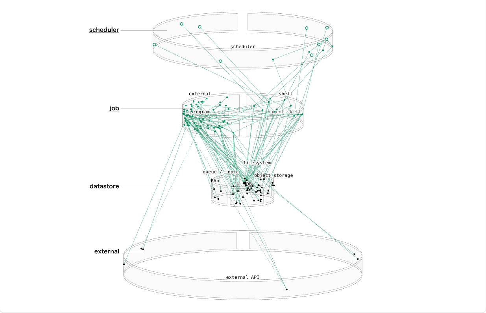
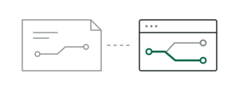
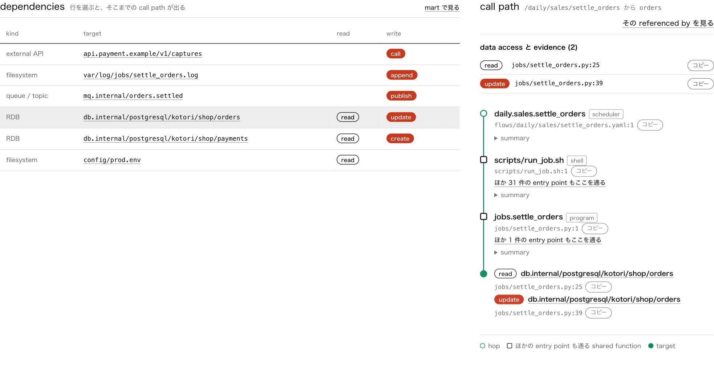
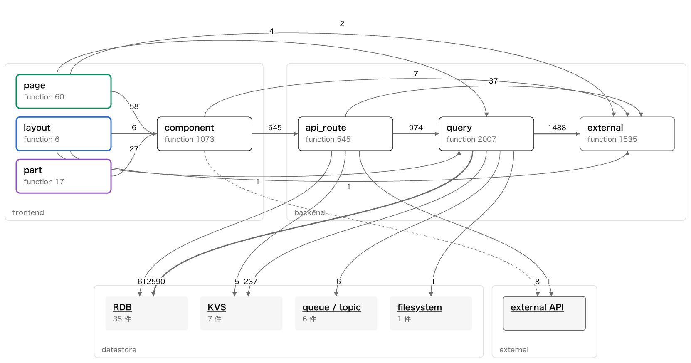
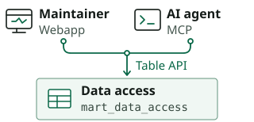

Find the settlement job
Of the 34 entry points, start with /daily/sales/settle_orders, a daily batch job launched by the scheduler.

Open Source / MIT License
Trace a change through an existing codebase. This open-source tool maps calls and data access from screens, API endpoints, and jobs, with source lines you can check.
Tap the 3D view to pause or resume rotation.

 Calls cross too many layers
Calls cross too many layersFollowing one function at a time makes it hard to see which entry points depend on it.

The design docs are out of dateYou end up reading the code again to find out how the system behaves today.
 An AI answer is hard to check
An AI answer is hard to checkYou need to know which lines support a claim and how much of the code was examined.
At Kotori Books, a fictional bookstore, a daily job settles the previous day’s orders. Follow it to the orders table and check the update in the source. The sample code and reference data come from the same specification.
Of the 34 entry points, start with /daily/sales/settle_orders, a daily batch job launched by the scheduler.
The flow calls scripts/run_job.sh, which runs jobs/settle_orders.py. This job both reads and updates orders.

The orders column shows that only the settlement job (settle_orders) reads and updates this table (RU). The sales report and product ranking both read it (R). Check those two reports when changing an order status.
Scope: /daily/sales has five entry points that access eight tables in the shop schema. The compact view shows the three entries that access orders. Open the image to see all eight columns.

| Entry point | Table | Operation |
|---|---|---|
| coupon_expiry | coupon_usages | D (delete) |
| coupons | RU (read, update) | |
| product_ranking | order_items | R (read) |
| orders | R (read) | |
| products | R (read) | |
| refund_returns | customers | R (read) |
| payments | CR (create, read) | |
| returns | RU (read, update) | |
| sales_report | order_items | R (read) |
| orders | R (read) | |
| products | R (read) | |
| settle_orders | orders | RU (read, update) |
| payments | CR (create, read) |
jobs/settle_orders.py
if not args.dry_run: db.execute_many( "UPDATE shop.orders SET status = 'settled', settled_at = now() WHERE id = %s",Line 39 sets the order status and settlement time. Two lines above it, the condition on line 37 shows why a dry run skips this update.
View the source on GitHubA web app has pages and routes. A CLI has subcommands. Each profile defines what counts as an entry point and which layers to trace.
In umami, a Next.js application, trace calls from pages through React components and API routes to queries.

Follow a request from its HTTP method and URL to the handler.
as-built-atlas APIFollow each subcommand through validation, execution, and reporting.
stfwStart with a model to find the tables it reads and writes.
as-built-atlas dbt modelsAI reads the code and records relationships. Once the analysis is saved, running the same operations on the same data produces the same summaries.
The agent follows calls, dependencies, reads, and writes from each entry point and records evidence for its claims.
Tools check structure and consistency, then save one YAML result per entry point.
Build dependency graphs and CRUD matrices from the saved analysis.
When the source is available, checks also verify that cited files and lines exist. Use those references to judge the interpretation and coverage.

The analysis distinguishes facts, interpretations, and unknowns with reasons. Maintainers can return to the cited file and line to check a claim.
Read the settlement analysis
The web app and MCP use the same API. Agents can call describe_atlas to read the profile and vocabulary, then query_mart to retrieve the rows they need.
GET /marts/mart_data_access/rows?limit=200query_mart(name="mart_data_access", filters={}, limit=200)Identify candidates and enumerate entry points.
A maintainer selects the entries to analyze.
An agent traces calls and records the evidence.
Check results and build tables across entries.
People and agents explore the same data.
All you need is Docker and Git. The sample includes the bookstore’s code and analysis results.